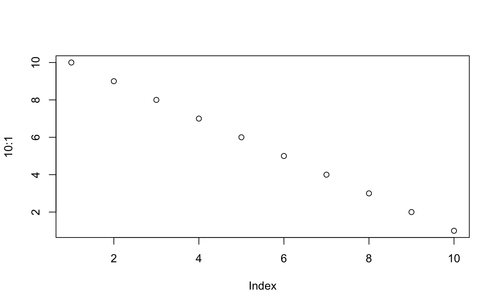
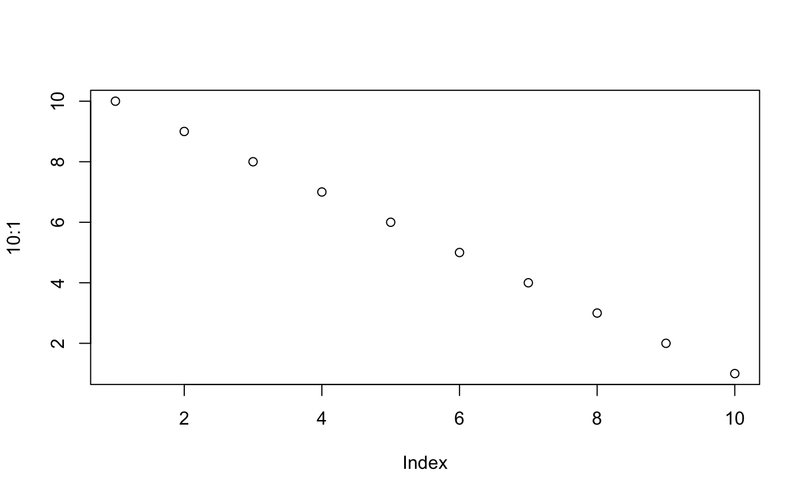

Towards confidence estimates in Cascade Networks using the SelectBoost package
Frédéric Bertrand
Université de Strasbourg and CNRSfrederic.bertrand@math.unistra.fr
2019-05-02
Source:vignettes/confidence-indices-Cascade-networks.Rmd
confidence-indices-Cascade-networks.Rmd#Introduction ## Aims of the vignette Extending results from the Cascade package: reverse engineering with selectboost to compute confidence indices on the inferred links.
Code
Code to reproduce the datasets saved with the package and the figures of the article Aouadi et al. (2018), <arXiv:1810.01670>
References
Reference for the Cascade modelling Vallat, L., Kemper, C. a., Jung, N., Maumy-Bertrand, M., Bertrand, F., Meyer, N., Pocheville, A., Fisher, J. W., Gribben, J. G. et Bahram, S. (2013). Reverse-engineering the genetic circuitry of a cancer cell with predicted intervention in chronic lymphocytic leukemia. Proceedings of the National Academy of Sciences of the United States of America, 110(2), 459-64.
Reference for the Cascade package Jung, N., Bertrand, F., Bahram, S., Vallat, L. et Maumy-Bertrand, M. (2014). Cascade : A R package to study, predict and simulate the diffusion of a signal through a temporal gene network. Bioinformatics. ISSN 13674803.
library(Cascade)
#We change the array with the F matrices T<-4 F<-array(0,c(T-1,T-1,T*(T-1)/2))
for(i in 1:(T(T-1)/2)){diag(F[,,i])<-1} F[,,2]<-F[,,2]0.2 F[2,1,2]<-1 F[3,2,2]<-1 F[,,4]<-F[,,2]*0.3 F[3,1,4]<-1 F[,,5]<-F[,,2]
#We set the seed to make the results reproducible set.seed(1) Net<-Cascade::network_random( nb=100, time_label=rep(1:4,each=25), exp=1, init=1, regul=round(rexp(100,1))+1, min_expr=0.1, max_expr=2, casc.level=0.4 ) Net@F<-F
#We simulate gene expression according to the network Net M <- Cascade::gene_expr_simulation( network=Net, time_label=rep(1:4,each=25), subject=5, level_peak=200)
#We infer the new network Net_inf_C <- Cascade::inference(M,cv.subjects=TRUE)
#heatmap of the coefficients of the Omega matrix of the network stats::heatmap(Net_inf_C@network, Rowv = NA, Colv = NA, scale=“none”, revC=TRUE)
Fab_inf_C <- Net_inf_C@F
library(SelectBoost) set.seed(1) #by default the crossvalidation is made subjectwise according to a leave one out #scheme and the resampling analysis is made at the .95 c0 level net_pct_selected <- selectboost(M, Fab_inf_C) net_pct_selected_.5 <- selectboost(M, Fab_inf_C, c0value = .5) net_pct_selected_thr <- selectboost(M, Fab_inf_C, group = group_func_1) #use cv.subject=FALSE to use default crossvalidation net_pct_selected_cv <- selectboost(M, Fab_inf_C, cv.subject=FALSE)
#use plot to display the result of the confidence analysis plot(net_pct_selected) plot(net_pct_selected_.5) plot(net_pct_selected_thr) plot(net_pct_selected_cv)
#Distribution of non-zero (absolute value > 1e-5) coefficients hist(Net_inf_C@network[abs(Net_inf_C@network)>1e-5])
#Plot of confidence at .95 resampling level versus coefficient value for non-zero (absolute value > 1e-5) coefficients plot(Net_inf_C@network[abs(Net_inf_C@network)>1e-5],net_pct_selected@network.confidence[abs(Net_inf_C@network)>1e-5]) hist(net_pct_selected@network.confidence[abs(Net_inf_C@network)>1e-5])
#Plot of confidence at .5 resampling level versus coefficient value for non-zero (absolute value > 1e-5) coefficients plot(Net_inf_C@network[abs(Net_inf_C@network)>1e-5],net_pct_selected_.5@network.confidence[abs(Net_inf_C@network)>1e-5]) hist(net_pct_selected_.5@network.confidence[abs(Net_inf_C@network)>1e-5])
#Plot of confidence at .95 resamling level with groups created by thresholding the correlation matrix #versus coefficient value for non-zero (absolute value > 1e-5) coefficients plot(Net_inf_C@network[abs(Net_inf_C@network)>1e-5],net_pct_selected_thr@network.confidence[abs(Net_inf_C@network)>1e-5]) hist(net_pct_selected_thr@network.confidence[abs(Net_inf_C@network)>1e-5])
#Plot of confidence at .95 resampling level versus coefficient value for non-zero (absolute value > 1e-5) coefficients using standard cross-validation plot(Net_inf_C@network[abs(Net_inf_C@network)>1e-5],net_pct_selected_cv@network.confidence[abs(Net_inf_C@network)>1e-5]) hist(net_pct_selected_cv@network.confidence[abs(Net_inf_C@network)>1e-5])
#either decrease pct selected or choose c0 with quantile.
The figure sizes have been customised so that you can easily put two images side-by-side.
 

You can enable figure captions by fig_caption: yes in YAML:
output:
rmarkdown::html_vignette:
fig_caption: yesThen you can use the chunk option fig.cap = "Your figure caption." in knitr.
More Examples
You can write math expressions, e.g. \(Y = X\beta + \epsilon\), footnotes1, and tables, e.g. using knitr::kable().
| mpg | cyl | disp | hp | drat | wt | qsec | vs | am | gear | carb | |
|---|---|---|---|---|---|---|---|---|---|---|---|
| Mazda RX4 | 21.0 | 6 | 160.0 | 110 | 3.90 | 2.620 | 16.46 | 0 | 1 | 4 | 4 |
| Mazda RX4 Wag | 21.0 | 6 | 160.0 | 110 | 3.90 | 2.875 | 17.02 | 0 | 1 | 4 | 4 |
| Datsun 710 | 22.8 | 4 | 108.0 | 93 | 3.85 | 2.320 | 18.61 | 1 | 1 | 4 | 1 |
| Hornet 4 Drive | 21.4 | 6 | 258.0 | 110 | 3.08 | 3.215 | 19.44 | 1 | 0 | 3 | 1 |
| Hornet Sportabout | 18.7 | 8 | 360.0 | 175 | 3.15 | 3.440 | 17.02 | 0 | 0 | 3 | 2 |
| Valiant | 18.1 | 6 | 225.0 | 105 | 2.76 | 3.460 | 20.22 | 1 | 0 | 3 | 1 |
| Duster 360 | 14.3 | 8 | 360.0 | 245 | 3.21 | 3.570 | 15.84 | 0 | 0 | 3 | 4 |
| Merc 240D | 24.4 | 4 | 146.7 | 62 | 3.69 | 3.190 | 20.00 | 1 | 0 | 4 | 2 |
| Merc 230 | 22.8 | 4 | 140.8 | 95 | 3.92 | 3.150 | 22.90 | 1 | 0 | 4 | 2 |
| Merc 280 | 19.2 | 6 | 167.6 | 123 | 3.92 | 3.440 | 18.30 | 1 | 0 | 4 | 4 |
Also a quote using >:
“He who gives up code safety for code speed deserves neither.” (via)
A footnote here.↩